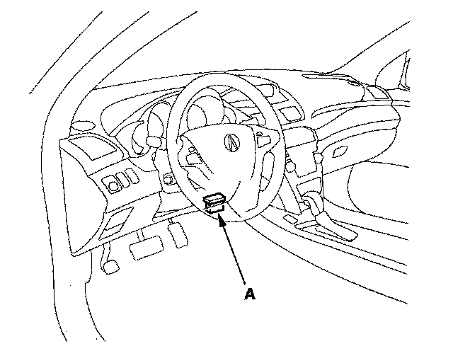
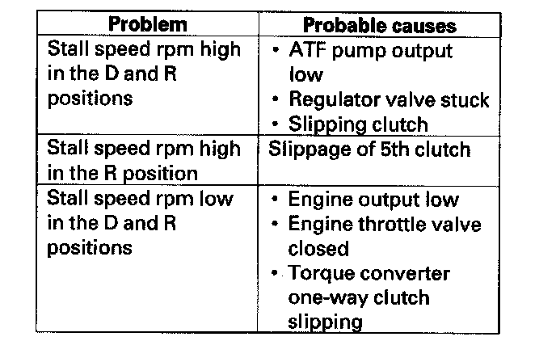

Stall Speed Test
Stall Speed Test1. Make sure the transmission fluid is filled to the proper level.
2. Apply the parking brake, and block all four wheels.
3. Connect the HDS to the DLC (A) and go to the A/T data list. If the HDS does not communicate with the PCM, troubleshoot the DLC circuit.

4. Make sure the A/C switch OFF.
5. After the engine has warmed up to normal operating temperature (the radiator fan comes on) shift to the D position.
6. Firmly press the brake pedal and accelerator pedal for 6 to 8 seconds, and note engine speed. Do not move the shift lever while raising engine speed.
7. Allow 2 minutes for cooling, then repeat the test in the R position.
NOTE:
^ Do not test stall speed for more than 10 seconds at a time.
^ Stall speed tests should be used for diagnostic purposes only.
^ Stall speed should be the same in the D and R positions.
^ Do not test stall speed with the A/T pressure gauges installed.
Stall Speed rpm:
Specification: 1,950 rpm
Service Limit: 1,800-2,100 rpm
8. If the measurements are out of the service limit, the possible problems and probable causes are listed in the table.
